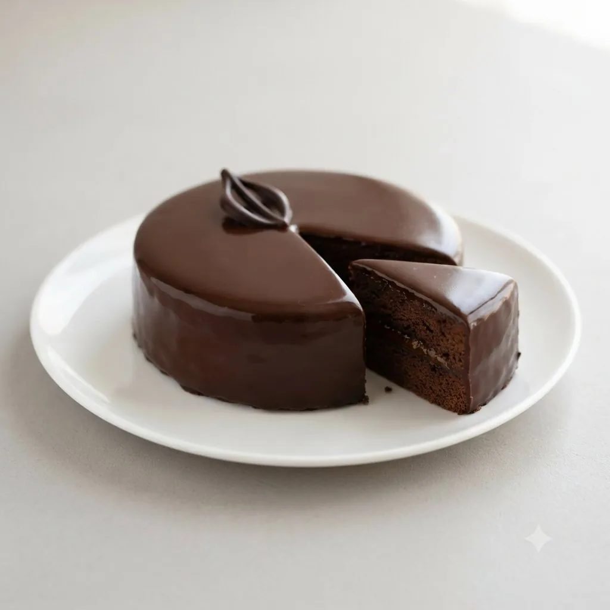

Biscuit Sacher
Biscuit chocolat-amandes très moelleux, utilisé dans la Sachertorte.

Pâte à biscuit
- Jaune d'œuf360 g
- Œuf entier240 g
- Sucre semoule500 g
- Farine200 g
- Beurre450 g
- Blanc d'œuf700 g
- Fécule ou Maïzena150 g
- Amandes blanches en poudre350 g
Étapes
- Crémer le beurre avec une partie du sucre.
- Ajouter progressivement les jaunes et les œufs entiers tiédis.
- Ajouter la couverture fondue.
- Incorporer la farine tamisée avec la fécule et les amandes en poudre.
- Monter les blancs en neige, serrer avec le sucre restant, incorporer délicatement, mouler et cuire.
Vous produisez en volume ?
4Cake fournit les professionnels de la pâtisserie au Maroc : chocolat, fruits secs, décors et matériel, avec tarifs et conditionnements grossiste.
Voir les tarifs grossiste